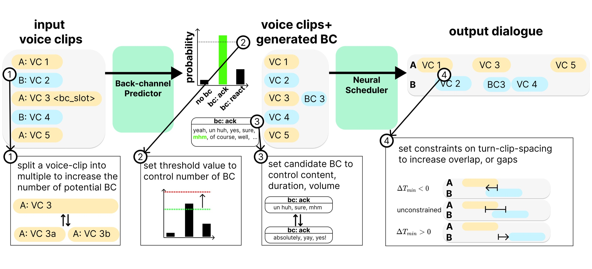
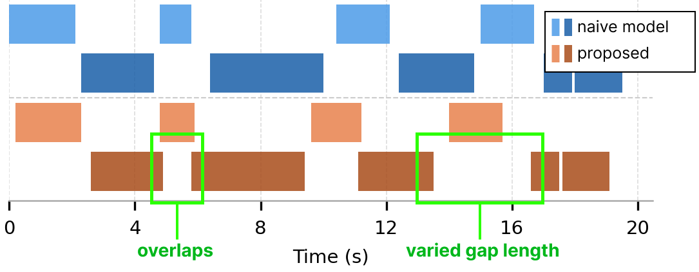
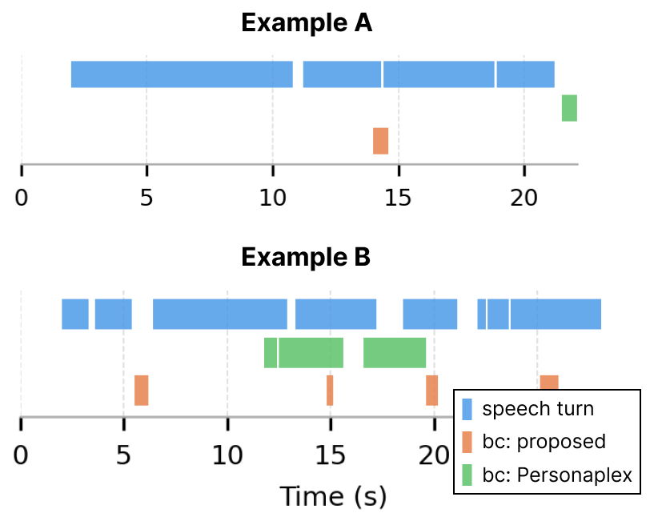

ACM SIGGRAPH MIG 2026 · Charleston, SC
The Neural Scheduler places every clip in time. Replies can overlap, pauses vary in length, and the back-channel lands where line 3 was split.
We present a novel approach to the problem of combining two voice-line channels of dyadic conversational audio into a unified conversation with controllable back-channeling and turn-taking dynamics.
In voice performances for the game industry, the two tracks of voice-lines are typically recorded or synthesized in isolation. Our method takes two such unsynchronized tracks and uses a neural scheduler to sequence them into a single dynamic conversation, modifying both tracks by inserting or removing pauses and introducing voice overlap as appropriate. We further propose a back-channel predictor that is able to predict opportunity for back-channels for a given conversational turn's audio and content, which the scheduler can then incorporate.
We evaluate our scheduler and predictor independently and in combination by: various quantitative comparison; a qualitative and perceptual comparison to prior art and naive baselines; a compelling set of results showing animator control over the diversity, extent and nature of back-channeling and turn dynamics.

A classifier reads each clip's text and audio and decides whether it invites a listener response, and whether that response should be a quiet acknowledgment (“uh-huh”) or a stronger reaction (“wow, really?”). The back-channel itself comes from a vocabulary the animator supplies.
A full-duplex language model that is given the content of every line and learns only its timing. We treat scheduling as next-token prediction over the two speakers' channels.
A three-pass search uses the scheduler to score candidate start times for each clip. Its settings are the animator's controls, so behavior changes without retraining.
Each group below is one dialogue rendered under different settings. The faces are animated from the scheduled audio.
| Model | TOR ↓ | Freq ↑ | JSD ↓ |
|---|---|---|---|
| Freeze-Omni | 0.636 | 0.001 | 0.997 |
| Gemini | 0.091 | 0.012 | 0.896 |
| Moshi | 1.000 | 0.001 | 0.957 |
| dGSLM | 0.691 | 0.015 | 0.934 |
| PersonaPlex | 0.327 | 0.025 | 0.649 |
| Ours | 0.000 | 0.062 | 0.644 |
Our TOR is zero by construction, because the system only inserts back-channels and never hands the listener the floor.
Share of forced-choice trials in which 20 listeners preferred our output. Whiskers are 95% confidence intervals and the dashed line is chance. The casual-chat result is not significant (p = 0.617): with simple, sequential turns the timing difference is hard to hear.


@inproceedings{pan2026voiceline,
author = {Pan, Yifang and Landreth, Chris and Singh, Karan},
title = {Constructing Dynamic Conversations with Neural Back-channel
Generation and Voice-line Scheduling},
booktitle = {The 19th ACM SIGGRAPH Conference on Motion, Interaction,
and Games (MIG '26)},
year = {2026},
publisher = {ACM},
isbn = {979-8-4007-2824-2},
doi = {10.1145/3828647.3857292}
}